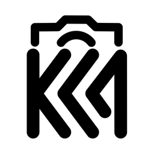

KACA.ID
PHOTOBOOTH STUDIO
Menyiapkan KACA.ID…
Menghubungkan layanan kamera dan memuat pengaturan.
Layanan belum siap.
Coba Lagi
Buka Dashboard Tanpa Kamera
OPERATOR CONSOLE / KACA.ID
Dashboard
↻ Pulihkan Menu
LOCAL MODE
OP
⛶
Layar penuh